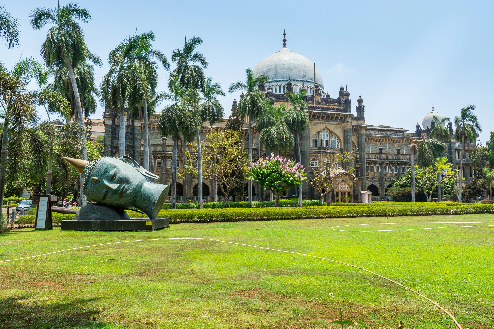
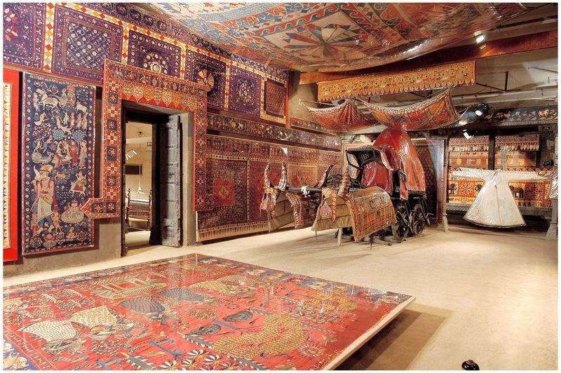

Uncover place
Popular destination
Explore the most popular destinations around the world.
-
-
-
-

Victoria Memorial
A grand marble building housing a museum with a collection of British colonial artifacts, paintings, and documents.
-
 Chhatrapati Shivaji Maharaj Vastu Sangrahalaya
A premier museum in Mumbai, known for its collection of ancient Indian art, sculptures, and artifacts.
-
 Calico Museum of Textiles
A museum dedicated to the history and art of Indian textiles, particularly focusing on the rich textile traditions of Gujarat.
-

Indian Museum
The largest and oldest museum in India, featuring a vast collection of artifacts, fossils, and art.
-

Prince of Wales Museum
A renowned museum in Mumbai, showcasing a diverse collection of ancient artifacts, sculptures, and decorative arts.